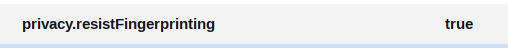
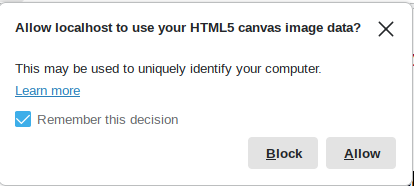

Mozilla Madness: Resist Fingerprinting!
Table of Contents
The Short Version For My Future Self
Although some sites tell you to set Firefox's privacy.resistFingerprinting option to true, it breaks altair's interaction and some other sites that use the canvas. It's probably better not to use that option, but if you do either:
- Install the Toggle Resist Fingerprinting extension and turn it off when things break (or just keep turning it off in
about:config). - Or set
privacy.resistFingerprinting.autoDeclineNoUserInputCanvasPromptsto False and accept the popup requests for the page you want to use.
Back To the Story: It Was a Dark and Rainy Day
I decided to give altair, the python data visualization library a try yesterday, just to see what it looked like. I ran their "hello, world" example and managed to get a plot.
Nothing fancy. If you move your cursor over the bars you might get a tool-tip giving you the width of the bar. If you do then you don't have the problem I ran into yesterday when I was trying it out. The image itself came out clear enough, but I couldn't figure out how to make the tool-tips work. I got desperate enough to try and read the documentation but it seems to be split between examples and API descriptions with little more in the way of explanatory documentation that would help to figure out how it was supposed to work. There are a lot of examples, though, so I decided to see if they would help, but then when I was looking at their Scatter Plot with Tool-tips example I noticed that their plots didn't have tool-tips either, which seemed suspicious. Was their library that broken? Was the internet?
I took a look at the JavaScript console and that's when I saw these messages.

It looked like it might be important, but when I went searching for the message I couldn't find anything relevant. At least not at first.
Start With the Nuclear Option
My first thought was that they had somehow made altair Chromium-only so I installed brave and, sure enough, the tool-tips worked when I switched browsers. So my initial conclusion was that I'd have to switch browsers if I decided to use altair. But then it occurred to me that I'd had problems in the past with some sites and anti-tracking options turned on in firefox so maybe it had something to do with that or one of the extensions. The question was, what setting was it or what extension? I eventually decided it was too much work to figure out so I first tried to use Troubleshoot Mode to disable all the extensions, and when that didn't work, I did a refresh and wiped out all the customizations I'd done to firefox. Amazingly, this worked, but now I had to go about setting Firefox up again while avoiding whatever I did that broke altair.
The Slow Crawl Back
I decided to follow the advice on the restoreprivacy.com page, just because it came up on the first page of my search results and it seemed to touch most of the bases that I'd run before this episode. As I did a step in the setup I would check back with the altair plot to make sure that the tool-tip was still working until, eventually, I came to the setting that broke it - privacy.resistFingerprinting.

When I set it to true the tool-tips would break and when I set it to false they would work again. So, then what? I didn't want to disable fingerprint protection, so I thought I'd do a little more searching and see if there was another way.
Is It a Bug?
I decided to do a search on Bugzilla and found what seemed like a relevant bug: WhatsApp Web images broken if you flip `privacy.resistFingerprinting` due to canvas prompts without user interaction. The discussion is about What's App and also mentions Instagram and Twitter, and although they are focused on images, the actual error seemed close enough to what I was seeing that it seemed like it might be the same or a similar thing. But the bug was opened two years ago, so if it is a bug it doesn't seem to be something they're eager to fix. Then I ran across this bug: Do not display Canvas Prompt unless triggered by user input which discusses changing the default behavior to not prompt the user for permission to use the canvas. Now that I'm describing it I'm not sure how I came to this next step based on that bug, but for some reason I went looking in about:config again and noticed that right under resistFingerprinting was resistFingerprinting.autoDeclineNoUserInputCanvasPrompts:

This option is set to True by default and seemed to be what they were talking about in the bug so I turned it off and went back to the altair page and this time when I put my cursor over the plot a popup came up asking me for permission.

Once allowed it, it worked, even with resistFingerprinting set to true. So, if I understand what the bug reports were saying, what was causing the problem is that firefox is getting a request for the canvas but it decides that it isn't the user initiating it, so it needs extra permission but by default the box to ask for permission is turned off and the request is declined without the user (me) getting any feedback. This seemed like a bug.
As I was thinking about this I remembered that a couple of days ago I went to the kindle cloud reader and one of the books wouldn't render. I went back and played with turning resistFingerprinting on and off before trying to load the ebook and this was apparently the culprit so it isn't just altair that's affected for me.
So it's a bug, right? It seemed like one, but there were already reports of this phenomena for other sites going back years so they appear to have done it on purpose. I was trying to figure out whether it was something that should be reported or not when I came upon this bug: Users enable `privacy.resistFingerprinting` and then are surprised when it causes problems.

Despite the fact that I've seen multiple sites saying to enable this "feature" maybe it isn't really a good idea after all. In the near-term I installed the Toggle Resist Fingerprinting extension and use it to turn resistFingerprinting on and off. To be honest, I'm not convinced that it really matters, I just got sucked into a trail of sites making conflicting assertions about what to do and convinced myself that I cared. At least I can read kindle books in the browser again.